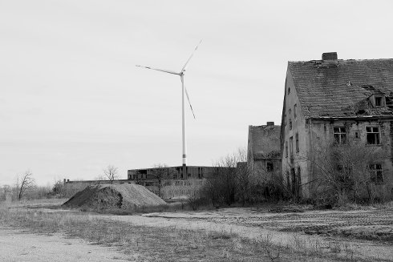

Artist in focus
THOMAS HEISE

Thomas Heise (*1955 in Berlin, GDR), writer, documentary filmmaker and theater director, became known as a chronicler of the German-German reunification. Among his essayistic documentaries are snapshots that capture the controversial political mood of the reunited country (DER IMBISS 1990, STAU 1992), and large oeuvres that, in an unmistakable style, connect the present with political states of German history (VATERLAND 2002) or contemporary history with the cultural life of GDR (MATERIAL 2009). Even with his early work WOZU DENN ÜBER DIESE LEUTE EINEN FILM? (1980), which he realized during his (abondend) studies at the HFF Potsdam, Heise demonstrated a feeling for underrepresented realities and hidden narratives. |
HEIMAT IS A SPACE OF TIME is a monumental maelstrom of memory reminiscent of Victor Klemperer's diaries, dating back to before the First World War. In letters, the genealogy of the filmmaker's family is traced against the background of political events and the cultural and spiritual life of the GDR.
Promises of a New Tomorrow – by Daniel Kasman, Mubi
Thomas Heise’s Heimat Is a Space in Time is majestic essay film whose scope is national and historical but whose address is deeply personal. The film tells the 20th century family history of the director through letters and diary entries. These remarkable documents, deeply evocative and wonderfully written, narrate in their own way the 20th century history of Germany, starting before the First World War and moving into the economic catastrophe of Weimar Republic, the increasingly terrifying and oppressive policies under the Nazis, and then segueing into life in East Germany, where Heise’s father was a notable philosopher.
These convulsive historical epochs breath in every word of the
correspondence and entries that Heise himself reads, but the first
encounter with the texts are individual first and foremost. They
tell of love (and love affairs), of the yearning for family across
borders (some family members are in Vienna while others are in
Germany), of fear, of socialist ideals, of children—in short, of the
whole gamut of human life on the personal level, emotive, dramatic,
confessional, posturing, placating, and brutally honest.
To accompany these texts, Heise has chosen an austere but potent
black and white palette which grants a haunting monumentality to his
images.
His camera sometimes visits current-day German streets and metros, teeming with life seemingly so removed from the previous century. Sometimes he visits site referenced in the letters, old work camps and factories; or we see photos of family members whose long texts are heard. A long, devastating stretch is devoted to scrolling through a list of names and addresses circa 1942 as we hear increasingly desolate and fearful letters from to Vienna about deportations of Jews to Poland. The specific location of other images are less clear, landscapes and ruptured highways, but the point is always exact: Heise’s eye considers his country now, after the reunification, as he through his family’s records traces how it came to this place.
Despite its modest means, the scope of the film is immense and its insights and peculiarities found in its epistolary revelation vast. It is an essential film of essential inquiry, one that looks into what is most close to its maker and finds people and stories that tell their own tale and through them something even bigger.